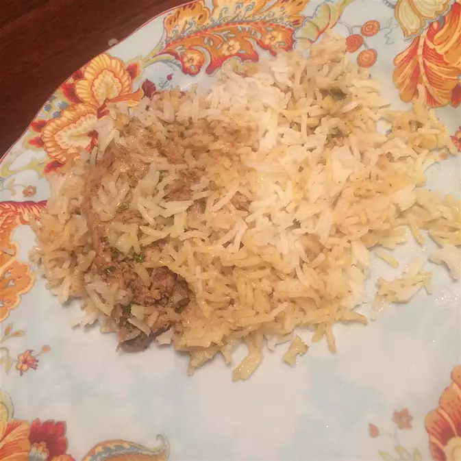

Hyedrabadi Dum Biryani

Description
Hyderabadi Dum Biryani is one of the most famous and delicious
indian cusine which is loved by a lot. As its name suggest, this cusine
originated from Hyedrabad but its popularity span across the world.
Feeling already hungry? Don't worry. Today we will teach you how to prepare this
mouthwatering delicious biryani in your own home. So get your pan and fork out
Today, we will be making this delicious biryani
Ingredients
- 3½ cups water
- 2⅓ cups basmati rice
- 4 bay leaves, divided
- ½ cup warm milk
- 1 pinch saffron threads
- ¼ cup ghee (clarified butter), divided
- 2 onions, thinly sliced
- 2 green chile peppers, chopped
Steps
- Place black peppercorns, cloves, cardamom, cinnamon sticks, star
anise, and kala jeera in a spice grinder; grind into a fine powder.
- Place cilantro and mint leaves in a food processor; pulse until coarsely
chopped.
- Combine spice powder, cilantro-mint mixture, yogurt, lemon juice, ginger-garlic
paste, chile powder, biryani masala powder, and turmeric in a large bowl. Add
chicken; turn to coat evenly. Cover with plastic wrap and let marinate in the
refrigerator, about 2 hours.
- Bring water and rice to a boil in a saucepan; add 2 bay leaves. Reduce heat to
medium-low, cover, and simmer until rice is partially cooked through and still
firm, about 5 minutes. Drain.
- Combine milk and saffron in a small bowl; stir to combine.
- Heat ghee in a large pot with a tight-fitting lid over medium-high heat.
Add onions; cook and stir until golden brown, about 15 minutes. Drain on
paper towels. Reduce heat to low. Add remaining 2 bay leaves and chile peppers;
cook and stir until fragrant, 1 to 2 minutes. Carefully remove 1 tablespoon of
ghee from the pot; set it aside.
- Wipe excess marinade off the chicken, discarding marinade, and add to the pot.
Cook over medium heat until no longer pink, about 2 minutes per side. Spread
drained rice on top. Sprinkle onions on top of the rice. Drizzle reserved ghee
and saffron milk over onions and rice.
- Cover the pot and cook over high heat, about 8 minutes. Reduce heat to low and
continue cooking, about 5 minutes. Remove from heat and let stand, covered,
until rice is tender and an instant-read thermometer inserted into the chicken
reads 165 degrees F (74 degrees C), about 15 minutes.